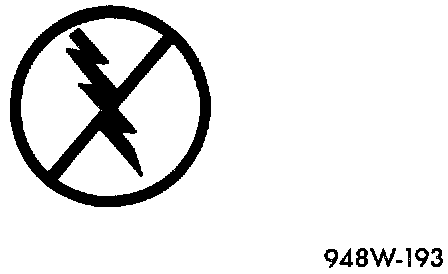

Electrostatic Discharge (ESD) Sensitive Devices
Electrostatic Discharge Symbol:

All Electrostatic Discharge (ESD) sensitive components are solid state and a symbol is used to indicate this. When handling any component with this symbol, comply with the following procedures to reduce the possibility of electrostatic charge build-up on the body and inadvertent discharge into the component. If it is not known whether the part is ESD sensitive, assume that it is.
1. Always touch a known good ground before handling the part. This should be repeated while handling the part, especially after sliding across a seat, sitting down from a standing position, or walking a distance.
2. Avoid touching electrical terminals of the part, unless instructed to do so by a written procedure.
3. When using a voltmeter, be sure to connect the ground lead first.
4. Do not remove the part from its protective packing until it is time to install the part.
5. Before removing the part from its package, ground the package to a known good ground on the vehicle.